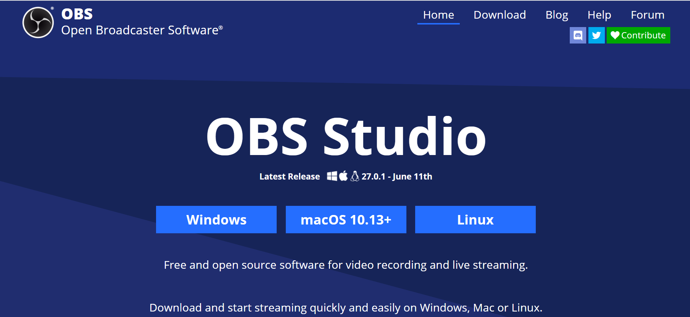
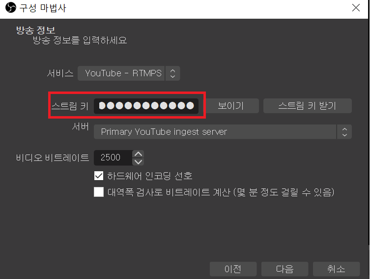
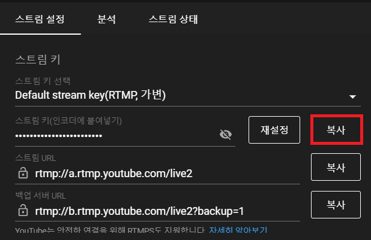

유튜브 라이브-소프트웨어 스트리밍
소프트웨어 스트리밍-OBS Studio이용하기
OBS Studio 설치하기
인터넷에 OBS Studio를 검색하여 자신의 운영체제에 맞게 다운로드합니다.

OBS Studio 초기 설정하기
OBS Studio를 열어 기본 설정해줍니다.
구성마법사창이 뜨면 기본해상도와 초당 프레임수를 설정해줍니다.
(기본 해상도는 1920X1080과 초당 프레임수는 60또는 30을 추천합니다.)

스트림 키 설정하기
다음을 누르면 방송정보를 설정할 수 있습니다.이때 스트림 키를 설정해야하는데, 이 스트림키는 유튜브에서 찾을 수 있습니다.
유튜브 스트림탭을 누르면 아래에 스트림 설정이 있습니다. 여기서 복사버튼을 누르면 스트림키가 복사됩니다.
복사한 후 스트림키에 붙여넣기 하면 완료됩니다.
